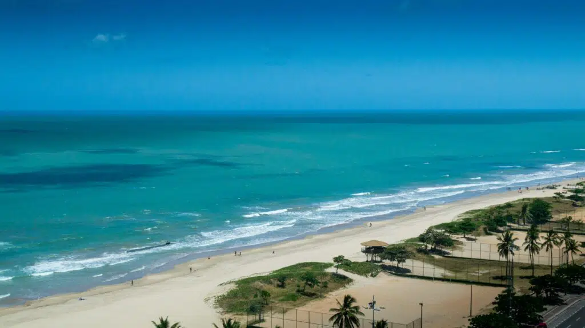

O que fazer em Recife?
Recife e Olinda formam uma dupla imbatível quando o assunto são os atrativos turísticos. Não deixe de reservar um tempo para conhecer a parte antiga das duas cidades - vá à Igreja da Sé, ao Convento São Francisco, ao Marco Zero, à Torre Malakoff, à Rua do Bom Jesus, à Capela Dourada e aos espaços construídos pelos primos Brennand, onde esculturas e objetos antigos fascinam os visitantes, a Oficina Brennand e o Instituto Ricardo Brennand. O mar também é um excelente motivo para explorar a cidade. Boa viagem é a principal praia do Recife e que tem uma ótima estrutura, mas se você sair dos limites da cidade poderá conhecer também a Praia de Calhetas, Praia dos Carneiros ou a famosa Porto de Galinhas, que vale mais do que um passeio de um único dia.Praia de Boa viagem

Oficina Brennand